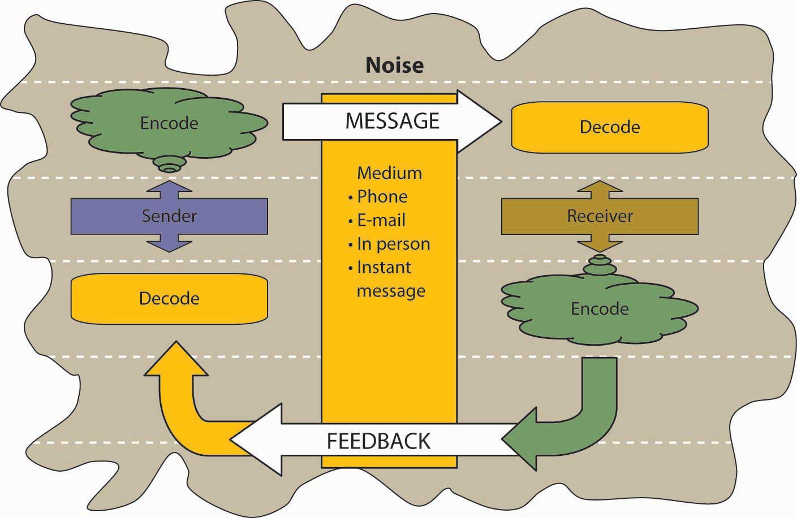
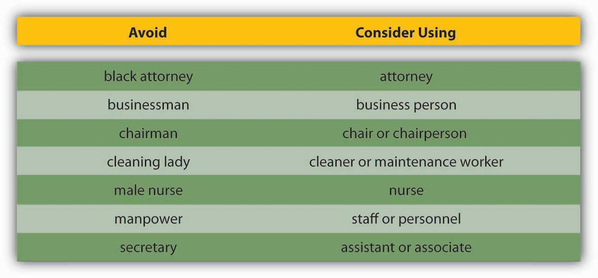
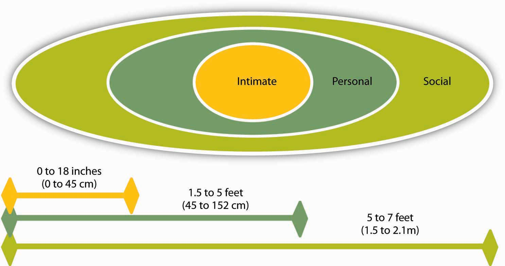
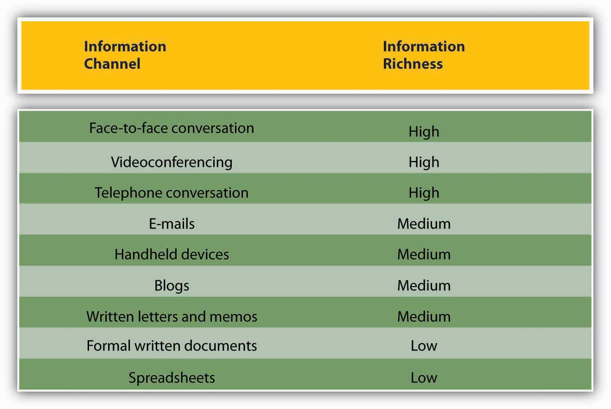
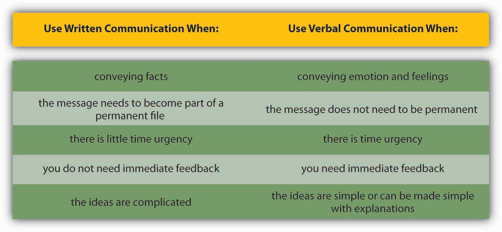
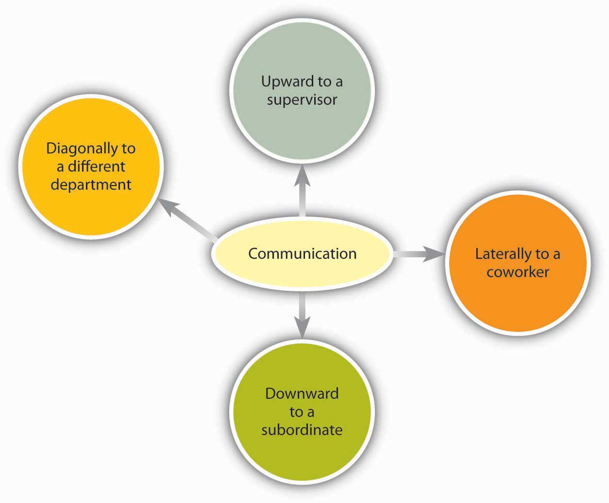

Reading this chapter will help you do the following:
Figure 12.2 The P-O-L-C Framework

Because of the economic turmoil that most financial institutions find themselves in today, it might come as a surprise that an individual investment company came in at number 2 on Fortune magazine’s “100 Best Companies to Work For” list in 2010, behind software giant SAS Institute Inc. Edward Jones Investments (a limited partnership company) was originally founded in St. Louis, Missouri, where its headquarters remain today. With more than 10,000 offices across the United States and Canada, they are able to serve nearly 7 million investors. This is the 10th year Edward Jones has made the Best Companies list. In addition, Edward Jones ranked highest with client satisfaction among full-service investment firms, according to an annual survey released by J. D. Power and Associates in 2009. How has Edward Jones maintained this favorable reputation in the eyes of both its employees and its customers?
It begins with the perks offered, including profit sharing and telecommuting. But if you ask the company’s CEO, Tim Kirley, he will likely tell you that it goes beyond the financial incentives, and at the heart of it is the culture of honest communication that he adamantly promotes. Kirley works with senior managers and team members in what makes up an open floor plan and always tries to maintain his approachability. Examples of this include direct communication, letters to staff and video, and Internet-posted talks. In addition, regular meetings are held to celebrate achievements and reinforce the firm’s ethos. Staff surveys are frequently administered and feedback is widely taken into consideration so that the 10,000 employees feel heard and respected.
According to Fortune’s managing editor, Hank Gilman, “The most important considerations for this year’s list were hiring and the ways in which companies are helping their employees weather the recession.” Edward Jones was able to persevere through the trauma of the recent financial crisis with no layoffs and an 8% one-year job growth. While a salary freeze was enacted, profit sharing continued. Kirley insists that the best approach to the recent economic downturn is to remain honest with his employees even when the news he is delivering is not what they want to hear.
Edward Jones was established in 1922 by Edward D. Jones Sr., and long ago, the company recognized the importance of a satisfied workforce and how that has the ability to translate into customer satisfaction and long-term growth. The company’s internal policy of open communication seems to carry over to how advisors value their relationship with individual customers. Investors are most likely to contact their advisor by directly visiting them at a local branch or by picking up the phone and calling them. Edward Jones’s managing partner, Jim Weddle, explains it best himself: “We are able to stay focused on the long-term because we are a partnership and we know who we are and what we do. When you respect the people who work here, you take care of them—not just in the good times, but in the difficult times as well.”
Case written by [citation redacted per publisher request]. Based on information from 100 best companies to work for. (2010, February 8). Fortune. Retrieved February 2, 2010, from http://money.cnn.com/magazines/fortune/bestcompanies/2010/full_list; St. Louis firms make Fortune’s best workplaces. (2009, January 22). St. Louis Business Journal. Retrieved February 3, 2010, from http://www.bizjournals.com/stlouis/stories/2009/01/19/daily40.html; Rodrigues, N., & Clayton, C. (2009). A positive difference in the office and the world. Sunday Times, pp. 10, 11. Retrieved from LexisNexis Academic database; Lawlor, A. (2008, March 13). Edward Jones is one to work for. Sunday Times, Financial Adviser. Retrieved February 2, 2010, from LexisNexis Academic database; Keeping clients happy. (2009, August 1). Registered Rep. Retrieved February 2, 2010, from http://registeredrep.com/planner-ria-practice/finance-keeping-clients-happy-0801
Communication supports each of a manager’s P-O-L-C functions. The ability to effectively communicate is a necessary condition for successfully planning, organizing, leading, and controlling. Communication is vital to organizations—it’s how we coordinate actions and achieve goals. It is defined in the Merriam-Webster’s dictionary as “a process by which information is exchanged between individuals through a common system of symbols, signs, or behavior.”Merriam-Webster online dictionary. (2008). Retrieved December 1, 2008, from http://www.merriam-webster.com/dictionary/communication. We know that 50%–90% of a manager’s time is spent communicatingSchnake, M. E., Dumler, M. P., Cochran, D. S., & Barnett, T. R. (1990). Effects of differences in subordinate perceptions of superiors’ communication practices. The Journal of Business Communication, 27, 37–50. and that communication ability is related to a manager’s performance.Penley, L. E., Alexander, E. R., Jernigan, I. E., & Henwood, C. I. (1991). Communication abilities of managers: The relationship of performance. Journal of Management, 17, 57–76. In most work environments, a miscommunication is an annoyance—it can interrupt workflow by causing delays and interpersonal strife. And in some work arenas, like operating rooms and airplane cockpits, communication can be a matter of life and death.
So, just how prevalent is the problem of miscommunication in the workplace? You may be surprised to learn that the relationship between miscommunication and negative outcomes is strong. A recent NASA study suggests that deficient interpersonal communication was a causal factor in approximately 70%–80% of aviation accidents over a 20-year period.Baron, R. (2004). Barriers to effective communication: Implications for the cockpit. Retrieved July 3, 2008, from AirlineSafety.com: http://www.airlinesafety.com/editorials/BarriersToCommunication.htm.
Poor communication can also lead to lawsuits. For example, you might think that malpractice suits are filed against doctors based on the outcome of their treatments alone. But a 1997 study of malpractice suits found that a primary influence on whether a doctor is sued is that doctor’s communication style. While the combination of a bad outcome and patient unhappiness can quickly lead to litigation, a warm, personal communication style leads to greater patient satisfaction. And satisfied patients are less likely to sue.Communications skills cut malpractice risk—study reveals most important reason that patients decide to file malpractice suits is because of poor communication by physicians and not medical errors. (1997, October). USA Today.
Figure 12.4
Success on complicated missions at NASA depends on strong communication.
For leaders and organizations, poor communication costs money and wastes time. One study found that 14% of each workweek is wasted on poor communication.Armour, S. (1998, September 30). Failure to Communicate Costly for Companies. USA Today, 1A. In contrast, effective communication is an asset for organizations and individuals alike. Effective communication skills, for example, are an asset for job seekers. A recent study of recruiters at 85 business schools ranked communication and interpersonal skills as the highest skills they were looking for, with 89% of the recruiters saying they were important.Alsop, R. (2006, September 20). The top business schools: Recruiters’ M.B.A. picks. Wall Street Journal Online. Retrieved September 20, 2006 from http://online.wsj.com/article/SB115860376846766495.html?mod=2_1245_1. Good communication can also help a company retain its star employees. Surveys find that when employees think their organizations do a good job of keeping them informed about matters that affect them and they have ready access to the information they need to do their jobs, they are more satisfied with their employers.What are the bottom line results of communicating? (2003, June). Pay for Performance Report, p. 1. Retrieved July 1, 2008, from http://www.mercerHR.com. So, can good communication increase a company’s market value? The answer seems to be yes. “When you foster ongoing communications internally, you will have more satisfied employees who will be better equipped to effectively communicate with your customers,” says Susan Meisinger, President/CEO of the Society for Human Resource Management, citing research findings that for organizations that are able to improve their communication integrity, their market value increases by as much as 7.1%.Meisinger, S. (2003, February). Enhancing communications—ours and yours. HR Magazine. Retrieved July 1, 2008, from http://www.shrm.org/hrmagazine/archive/0203toc.asp. We will explore the definition and benefits of effective communication in our next section.
Figure 12.5

Lee Iacocca, past president and CEO of Chrysler until his retirement in 1992, said, “You can have brilliant ideas, but if you can’t get them across, your ideas won’t get you anywhere.”
Communication fulfills three main functions within an organization: (1) transmitting information, (2) coordinating effort, and (3) sharing emotions and feelings. All these functions are vital to a successful organization. Transmitting information is vital to an organization’s ability to function. Coordinating effort within the organization helps people work toward the same goals. Sharing emotions and feelings bonds teams and unites people in times of celebration and crisis. Effective communication helps people grasp issues, build rapport with coworkers, and achieve consensus. So, how can we communicate effectively? The first step is to understand the communication process.
We all exchange information with others countless times a day, by phone, e-mail, printed word, and of course, in person. Let’s take a moment to see how a typical communication works using the Process Model of Communication as a guide.
Figure 12.6 The Process Model of Communication
A Sender, such as a boss, coworker, or customer, originates the Message with a thought. For example, the boss’s thought could be: “Get more printer toner cartridges!”
The Sender encodesThe translation of ideas into words. the Message, translating the idea into words.
The boss may communicate this thought by saying, “Hey you guys, we need to order more printer toner cartridges.”
The mediumThe way that a Sender’s Message is conveyed. of this encoded Message may be spoken words, written words, or signs.
The receiverThe person who a Message is intended to reach. is the person who receives the Message.
The Receiver decodesThe process of assigning meaning to a received Message. the Message by assigning meaning to the words.
In this example, our Receiver, Bill, has a to-do list a mile long. “The boss must know how much work I already have.” the Receiver thinks. Bill’s mind translates his boss’s Message as, “Could you order some printer toner cartridges, in addition to everything else I asked you to do this week…if you can find the time?”
The meaning that the Receiver assigns may not be the meaning that the Sender intended because of such factors as noise. NoiseAnything that interferes with or distorts the Message being transformed. is anything that interferes with or distorts the Message being transformed. Noise can be external in the environment (such as distractions) or it can be within the Receiver. For example, the Receiver may be highly nervous and unable to pay attention to the Message. Noise can even occur within the Sender: the Sender may be unwilling to take the time to convey an accurate Message or the words she chooses can be ambiguous and prone to misinterpretation.
Picture the next scene. The place: a staff meeting. The time: a few days later. The boss believes her Message has been received.
“Are the printer toner cartridges here yet?” she asks.
“You never said it was a rush job!” the Receiver protests.
“But!”
“But!”
Miscommunications like these happen in the workplace every day. We’ve seen that miscommunication does occur in the workplace. But how does a miscommunication happen? It helps to think of the communication process. The series of arrows pointing the way from the Sender to the Receiver and back again can, and often do, fall short of their target.
Communication is vital to organizations. Poor communication is prevalent and can have serious repercussions. Communication fulfills three functions within organizations: transmitting information, coordinating, and sharing emotions and feelings. Noise can disrupt or distort communication.
Communicating can be more of a challenge than you think, when you realize the many things that can stand in the way of effective communication. These include filtering, selective perception, information overload, emotional disconnects, lack of source familiarity or credibility, workplace gossip, semantics, gender differences, differences in meaning between Sender and Receiver, and biased language. Let’s examine each of these barriers.
FilteringThe distortion or withholding of information to manage a person’s reactions. is the distortion or withholding of information to manage a person’s reactions. Some examples of filtering include a manager who keeps her division’s poor sales figures from her boss, the vice president, fearing that the bad news will make him angry. The old saying, “Don’t shoot the messenger!” illustrates the tendency of Receivers (in this case, the vice president) to vent their negative response to unwanted Messages on the Sender. A gatekeeper (the vice president’s assistant, perhaps) who doesn’t pass along a complete Message is also filtering. The vice president may delete the e-mail announcing the quarter’s sales figures before reading it, blocking the Message before it arrives.
As you can see, filtering prevents members of an organization from getting a complete picture of the way things are. To maximize your chances of sending and receiving effective communications, it’s helpful to deliver a Message in multiple ways and to seek information from multiple sources. In this way, the effect of any one person’s filtering the Message will be diminished.
Since people tend to filter bad news more during upward communication, it is also helpful to remember that those below you in an organization may be wary of sharing bad news. One way to defuse the tendency to filter is to reward employees who clearly convey information upward, regardless of whether the news is good and bad.
Here are some of the criteria that individuals may use when deciding whether to filter a Message or pass it on:
Once again, filtering can lead to miscommunications in business. Each listener translates the Message into his or her own words, creating his or her own version of what was said.Alessandra, T. (1993). Communicating at work. New York: Fireside.
Selective perceptionThe personal filtering of what we see and hear to suit our own needs. refers to filtering what we see and hear to suit our own needs. This process is often unconscious. Small things can command our attention when we’re visiting a new place—a new city or a new company. Over time, however, we begin to make assumptions about the way things are on the basis of our past experience. Often, much of this process is unconscious. “We simply are bombarded with too much stimuli every day to pay equal attention to everything so we pick and choose according to our own needs.”Pope, R. R. Selective perception. Illinois State University. Retrieved December 1, 2008, from http://lilt.ilstu.edu/rrpope/rrpopepwd/articles/perception3.html. Selective perception is a time-saver, a necessary tool in a complex culture. But it can also lead to mistakes.
Think back to the earlier example conversation between Bill, who was asked to order more toner cartridges, and his boss. Since Bill found his boss’s to-do list to be unreasonably demanding, he assumed the request could wait. (How else could he do everything else on the list?) The boss, assuming that Bill had heard the urgency in her request, assumed that Bill would place the order before returning to the other tasks on her list.
Both members of this organization were using selective perception to evaluate the communication. Bill’s perception was that the task of ordering could wait. The boss’s perception was that her time frame was clear, though unstated. When two selective perceptions collide, a misunderstanding occurs.
Information overloadThis occurs when the information processing demands on an individual’s time to perform interactions and internal calculations exceed the supply or capacity of time available for such processing. can be defined as “occurring when the information processing demands on an individual’s time to perform interactions and internal calculations exceed the supply or capacity of time available for such processing.”Schick, A. G., Gordon, L. A., & Haka, S. (1990). Information overload: A temporal approach. Accounting, Organizations, and Society, 15, 199–220. Messages reach us in countless ways every day. Some are societal—advertisements that we may hear or see in the course of our day. Others are professional—e-mails, and memos, voice mails, and conversations from our colleagues. Others are personal—messages and conversations from our loved ones and friends.
Add these together and it’s easy to see how we may be receiving more information than we can take in. This state of imbalance is known as information overload. Experts note that information overload is “A symptom of the high-tech age, which is too much information for one human being to absorb in an expanding world of people and technology. It comes from all sources including TV, newspapers, and magazines as well as wanted and unwanted regular mail, e-mail and faxes. It has been exacerbated enormously because of the formidable number of results obtained from Web search engines.”Retrieved July 1, 2008, from PC Magazine encyclopedia Web site, http://www.pcmag.com/encyclopedia_term/0,2542,t=information+overload&i=44950,00.asp, and reinforced by information in Dawley, D. D., & Anthony, W. P. (2003). User perceptions of e-mail at work. Journal of Business and Technical Communication, 17, 170–200. Other research shows that working in such fragmented fashion has a significant negative effect on efficiency, creativity, and mental acuity.Based on Overholt, A. (2001, February). Intel’s got (too much) mail. Fast Company. Retrieved July 2, 2008, from http://www.fastcompany.com/online/44/intel.html and http://blogs.intel.com/it/2006/10/information_overload.php.
Going back to our example of Bill. Let’s say he’s in his cubicle on the phone with a supplier. While he’s talking, he hears the chime of e-mail alerting him to an important message from his boss. He’s scanning through it quickly, while still on the phone, when a coworker pokes his head around the cubicle corner to remind Bill that he’s late for a staff meeting. The supplier on the other end of the phone line has just given Bill a choice among the products and delivery dates he requested. Bill realizes he missed hearing the first two options, but he doesn’t have time to ask the supplier to repeat them all or to try reconnecting to place the order at a later time. He chooses the third option—at least he heard that one, he reasons, and it seemed fair. How good was Bill’s decision amid all the information he was processing at the same time?
Emotional disconnects happen when the Sender or the Receiver is upset, whether about the subject at hand or about some unrelated incident that may have happened earlier. An effective communication requires a Sender and a Receiver who are open to speaking and listening to one another, despite possible differences in opinion or personality. One or both parties may have to put their emotions aside to achieve the goal of communicating clearly. A Receiver who is emotionally upset tends to ignore or distort what the Sender is saying. A Sender who is emotionally upset may be unable to present ideas or feelings effectively.
Lack of source familiarity or credibility can derail communications, especially when humor is involved. Have you ever told a joke that fell flat? You and the Receiver lacked the common context that could have made it funny. (Or yes, it could have just been a lousy joke.) Sarcasm and irony are subtle, and potentially hurtful, commodities in business. It’s best to keep these types of communications out of the workplace as their benefits are limited, and their potential dangers are great. Lack of familiarity with the Sender can lead to misinterpreting humor, especially in less-rich information channels like e-mail. For example, an e-mail from Jill that ends with, “Men, like hens, should boil in vats of oil,” could be interpreted as antimale if the Receiver didn’t know that Jill has a penchant for rhyme and likes to entertain coworkers by making up amusing sayings.
Similarly, if the Sender lacks credibility or is untrustworthy, the Message will not get through. Receivers may be suspicious of the Sender’s motivations (“Why am I being told this?”). Likewise, if the Sender has communicated erroneous information in the past, or has created false emergencies, his current Message may be filtered.
Workplace gossip, also known as the grapevineThe informal gossip network within a given organization., is a lifeline for many employees seeking information about their company.Kurland, N. B., & Pelled, L. H. (2000). Passing the word: Toward a model of gossip and power in the workplace. Academy of Management Review, 25, 428–438. Researchers agree that the grapevine is an inevitable part of organizational life. Research finds that 70% of all organizational communication occurs at the grapevine level.Crampton, S. M. (1998). The informal communication network: factors influencing grapevine activity. Public Personnel Management. Retrieved July 2, 2008, from http://www.allbusiness.com/management/735210-1.html.
Employees trust their peers as a source of Messages, but the grapevine’s informal structure can be a barrier to effective communication from the managerial point of view. Its grassroots structure gives it greater credibility in the minds of employees than information delivered through official channels, even when that information is false.
Some downsides of the office grapevine are that gossip offers politically minded insiders a powerful tool for disseminating communication (and self-promoting miscommunications) within an organization. In addition, the grapevine lacks a specific Sender, which can create a sense of distrust among employees—who is at the root of the gossip network? When the news is volatile, suspicions may arise as to the person or persons behind the Message. Managers who understand the grapevine’s power can use it to send and receive Messages of their own. They also decrease the grapevine’s power by sending official Messages quickly and accurately, should big news arise.
SemanticsThe meanings of words and the study of meaning in communication. is the study of meaning in communication. Words can mean different things to different people, or they might not mean anything to another person. For example, companies often have their own acronyms and buzzwords (called business jargon) that are clear to them but impenetrable to outsiders. For example, at IBM, GBS is focusing on BPTS, using expertise acquired from the PwC purchase (which had to be sold to avoid conflicts of interest in light of SOX) to fend other BPO providers and inroads by the Bangalore tiger. Does this make sense to you? If not, here’s the translation: IBM’s Global Business Services (GBS) division is focusing on offering companies Business Process Transformation Services (BPTS), using the expertise it acquired from purchasing the management consulting and technology services arm of PricewaterhouseCoopers (PwC), which had to sell the division because of the Sarbanes-Oxley Act (SOX, enacted in response to the major accounting scandals like the Enron). The added management expertise puts it above business process outsourcing (BPO) vendors who focus more on automating processes rather than transforming and improving them. Chief among these BPO competitors is Wipro, often called the “Bangalore tiger” because of its geographic origin and aggressive growth.
Given the amount of Messages we send and receive every day, it makes sense that humans try to find shortcuts—a way to communicate things in code. In business, this code is known as jargonA specific set of acronyms or words unique to a specific group or profession.. Jargon is the language of specialized terms used by a group or profession. It is common shorthand among experts and if used sensibly can be a quick and efficient way of communicating. Most jargon consists of unfamiliar terms, abstract words, nonexistent words, acronyms, and abbreviations, with an occasional euphemism thrown in for good measure. Every profession, trade, and organization has its own specialized terms.Wright, N. Keep it jargon-free. Retrieved July 2, 2008, from http://www.plainlanguage.gov/howto/wordsuggestions/jargonfree.cfm. At first glance, jargon seems like a good thing—a quicker way to send an effective communication, the way text message abbreviations can send common messages in a shorter, yet understandable way. But that’s not always how things happen. Jargon can be an obstacle to effective communication, causing listeners to tune out or fostering ill-feeling between partners in a conversation. When jargon rules the day, the Message can get obscured.
A key question to ask before using jargon is, “Who is the Receiver of my Message?” If you are a specialist speaking to another specialist in your area, jargon may be the best way to send a message while forging a professional bond—similar to the way best friends can communicate in code. For example, an information technology (IT) systems analyst communicating with another IT employee may use jargon as a way of sharing information in a way that reinforces the pair’s shared knowledge. But that same conversation should be held in standard English, free of jargon, when communicating with staff members outside the IT group.
Here is a Web site of 80 buzz words in business:
http://www.amanet.org/movingahead/editorial2002_2003/nov03_80buzzwords.htm
and a discussion of why slang is a problem:
http://sbinfocanada.about.com/od/speakforsuccesscourse/a/speechlesson5.htm.
Gender differences in communication have been documented by a number of experts, including linguistics professor Deborah Tannen in her best-selling book You Just Don’t Understand: Women and Men in Conversation.Tannen, D. (1991). You just don’t understand: Women and men in conversation. New York: Ballantine. Men and women work together every day. But their different styles of communication can sometimes work against them. Generally speaking, women like to ask questions before starting a project, while men tend to “jump right in.” A male manager who’s unaware of how many women communicate their readiness to work may misperceive a ready employee as not ready.
Another difference that has been noticed is that men often speak in sports metaphors, while many women use their home as a starting place for analogies. Women who believe men are “only talking about the game” may be missing out on a chance to participate in a division’s strategy and opportunities for teamwork and “rallying the troops” for success.Krotz, J. L. (n.d.). 6 tips for bridging the communication gap. Retrieved July 2, 2008, from Microsoft Small Business Center Web site, http://www.microsoft.com/smallbusiness/resources/management/leadership-training/women-vs-men-6-tips-for-bridging-the-communication-gap.aspx.
“It is important to promote the best possible communication between men and women in the workplace,” notes gender policy adviser Dee Norton, who provided the above example. “As we move between the male and female cultures, we sometimes have to change how we behave (speak the language of the other gender) to gain the best results from the situation. Clearly, successful organizations of the future are going to have leaders and team members who understand, respect and apply the rules of gender culture appropriately.”Norton, D. Gender and communication—finding common ground. Retrieved July 2, 2008, from http://www.uscg.mil/leadership/gender.htm.
Being aware of these gender differences can be the first step in learning to work with them, as opposed to around them. For example, keep in mind that men tend to focus more on competition, data, and orders in their communications, while women tend to focus more on cooperation, intuition, and requests. Both styles can be effective in the right situations, but understanding the differences is a first step in avoiding misunderstandings based on them.
Differences in meaning often exist between the Sender and Receiver. “Mean what you say, and say what you mean.” It’s an easy thing to say. But in business, what do those words mean? Different words mean different things to different people. Age, education, and cultural background are all factors that influence how a person interprets words. The less we consider our audience, the greater our chances of miscommunication will be. When communication occurs in the cross-cultural context, extra caution is needed given that different words will be interpreted differently across cultures and different cultures have different norms regarding nonverbal communication. Eliminating jargon is one way of ensuring that our words will convey real-world concepts to others. Speaking to our audience, as opposed to about ourselves, is another. Nonverbal Messages can also have different meanings.
Table 12.1 Gestures Around the Globe
|
Figure 12.8 |
1. “V” for victory. Use this gesture with caution! While in North America it signs victory or peace, in England and Australia it means something closer to “take this!” |
|
Figure 12.9 |
2. The “OK” gesture. While in North America it means things are going well, in France it means a person is thought to be worthless, in Japan it refers to money, and in Brazil, Russia, and Germany it means something really not appropriate for the workplace. |
|
Figure 12.10 |
3. The “thumbs up” means one in Germany, five in Japan, but a good job in North America. This can lead to confusion. |
|
Figure 12.11 |
4. “Hook ‘em horns.” This University of Texas rallying call looks like the horns of a bull. However, in Italy it means you are being tricked, while in Brazil and Venezuela it means you are warding off evil. |
|
Figure 12.12 |
5. Waving your hand. In much of Europe waving your hand indicates a disagreement. However, in North America it is routinely used as a way to signal greetings or to get someone’s attention. |
Adapted from information in Axtell, R. E. (1998). Gestures: The do’s and taboos of body language around the world. New York: John Wiley.
Managers who speak about “long-term goals and profits” to a staff that has received scant raises may find their core Message (“You’re doing a great job—and that benefits the folks in charge!”) has infuriated the group they hoped to inspire. Instead, managers who recognize the “contributions” of their staff and confirm that this work is contributing to company goals in ways “that will benefit the source of our success—our employees as well as executives,” will find their core Message (“You’re doing a great job—we really value your work”) is received as opposed to being misinterpreted.
Biased language can offend or stereotype others on the basis of their personal or group affiliation. The figure below provides a list of words that have the potential to be offensive in the left-hand column. The right-hand column provides more neutral words that you can use instead.Adapted from information in Ashcraft, K., & Mumby, D. K. (2003). Reworking gender. Thousand Oaks, CA, Sage; Miller, C., & Swift, K. (1980). The handbook of nonsexist writing. New York: Lippincott & Crowell; Procter, M. (2007, September 11). Unbiased language. Retrieved July 2, 2008, from http://www.utoronto.ca/writing/unbias.html.
Figure 12.13 Avoiding Biased Language
Effective communication is clear, factual, and goal-oriented. It is also respectful. Referring to a person by one adjective (a brain, a diabetic, an invalid) reduces that person to that one characteristic. Language that belittles or stereotypes a person poisons the communication process. Language that insults an individual or group based on age, ethnicity, sexual preference, or political beliefs violates public and private standards of decency, ranging from civil rights to corporate regulations.
The effort to create a neutral set of terms to refer to heritage and preferences has resulted in a debate over the nature of “political correctness.” Proponents of political correctness see it as a way to defuse the volatile nature of words that stereotyped groups and individuals in the past. Critics of political correctness see its vocabulary as stilted and needlessly cautious.
Many companies offer new employees written guides on standards of speech and conduct. These guides, augmented by common sense and courtesy, are solid starting points for effective, respectful workplace communication. Tips for appropriate workplace speech include but are not limited to
Former Chrysler CEO Lee Iacocca lamented, “I only wish I could find an institute that teaches people how to listen. After all, a good manager needs to listen at least as much as he needs to talk.”Iacocca, L., & Novak, W. (1984). Iacocca: An autobiography. New York: Bantam Press. Research shows that listening skills are related to promotions.Sypher, B. D., Bostrom, R. N., & Seibert, J. H. (1989). Listening, communication abilities, and success at work. Journal of Business Communication, 26, 293–303. A Sender may strive to deliver a Message clearly. But the Receiver’s ability to listen effectively is equally vital to effective communication. The average worker spends 55% of her workdays listening. Managers listen up to 70% each day. But listening doesn’t lead to understanding in every case. Listening takes practice, skill, and concentration.
According to University of San Diego professor Phillip Hunsaker, “The consequences of poor listening are lower employee productivity, missed sales, unhappy customers, and billions of dollars of increased cost and lost profits. Poor listening is a factor in low employee morale and increased turnover because employees do not feel their managers listen to their needs, suggestions, or complaints.”Alessandra, T., Garner, H., & Hunsaker, P. L. (1993). Communicating at work. New York: Simon & Schuster. Clearly, if you hope to have a successful career in management, it behooves you to learn to be a good listener.
Alan Gulick, a Starbucks spokesperson, puts better listening to work in pursuit of better profits. If every Starbucks employee misheard one $10 order each day, he calculates, their errors would cost the company a billion dollars annually. To teach its employees to listen, Starbucks created a code that helps employees taking orders hear the size, flavor, and use of milk or decaf coffee. The person making the drink echoes the order aloud.
How can you improve your listening skills? The Roman philosopher Cicero said, “Silence is one of the great arts of conversation.” How often have we been in conversation with someone else where we are not really listening but itching to convey our portion? This behavior is known as “rehearsing.” It suggests the Receiver has no intention of considering the Sender’s Message and intends to respond to an earlier point instead. Clearly, rehearsing is an impediment to the communication process. Effective communication relies on another kind of listening: active listening.
Active listeningGiving full attention to what other people are saying. can be defined as giving full attention to what other people are saying, taking time to understand the points being made, asking questions as appropriate, and not interrupting at inappropriate times.O*NET Resource Center, the nation’s primary source of occupational information. Retrieved July 2, 2008, from http://online.onetcenter.org/skills.Active listening creates a real-time relationship between the Sender and the Receiver by acknowledging the content and receipt of a Message. As we’ve seen in the Starbucks example, repeating and confirming a Message’s content offers a way to confirm that the correct content is flowing between colleagues. The process creates a bond between coworkers while increasing the flow and accuracy of messaging.
Carl Rogers, founder of the “person-centered” approach to psychology, formulated five rules for active listening:
The good news is that listening is a skill that can be learned.Brownell, J. (1990). Perceptions of effective listeners: A management study. Journal of Business Communications, 27, 401–415. The first step is to decide that we want to listen. Casting aside distractions, such as by reducing background or internal noise, is critical. The Receiver takes in the Sender’s Message silently, without speaking. Second, throughout the conversation, show the speaker that you’re listening. You can do this nonverbally by nodding your head and keeping your attention focused on the speaker. You can also do it verbally, by saying things like, “Yes,” “That’s interesting,” or other such verbal cues. As you’re listening, pay attention to the Sender’s body language for additional cues about how they’re feeling. Interestingly, silence plays a major role in active listening. During active listening, we are trying to understand what has been said, and in silence, we can consider the implications. We can’t consider information and reply to it at the same time. That’s where the power of silence comes into play. Finally, if anything is not clear to you, ask questions. Confirm that you’ve heard the message accurately, by repeating back a crucial piece like, “Great, I’ll see you at 2 p.m. in my office.” At the end of the conversation, a “thank you” from both parties is an optional but highly effective way of acknowledging each other’s teamwork.
In summary, active listening creates a more dynamic relationship between a Receiver and a Sender. It strengthens personal investment in the information being shared. It also forges healthy working relationships among colleagues by making Speakers and Listeners equally valued members of the communication process.
Many barriers to effective communication exist. Examples include filtering, selective perception, information overload, emotional disconnects, lack of source familiarity or credibility, workplace gossip, semantics, gender differences, differences in meaning between Sender and Receiver, and biased language. The Receiver can enhance the probability of effective communication by engaging in active listening, which involves (1) giving one’s full attention to the Sender and (2) checking for understanding by repeating the essence of the Message back to the Sender.
Communication can be categorized into three basic types: (1) verbal communication, in which you listen to a person to understand their meaning; (2) written communication, in which you read their meaning; and (3) nonverbal communication, in which you observe a person and infer meaning. Each has its own advantages, disadvantages, and even pitfalls.
Verbal communications in business take place over the phone or in person. The medium of the Message is oral. Let’s return to our printer cartridge example. This time, the Message is being conveyed from the Sender (the Manager) to the Receiver (an employee named Bill) by telephone. We’ve already seen how the Manager’s request to Bill (“We need to buy more printer toner cartridges”) can go awry. Now let’s look at how the same Message can travel successfully from Sender to Receiver.
Manager (speaking on the phone): “Good morning, Bill!”
(By using the employee’s name, the manager is establishing a clear, personal link to the Receiver.)
Manager: “Your division’s numbers are looking great.”
(The Manager’s recognition of Bill’s role in a winning team further personalizes and emotionalizes the conversation.)
Manager: “Our next step is to order more printer toner cartridges. Could you place an order for 1,000 printer toner cartridges with Jones Computer Supplies? Our budget for this purchase is $30,000, and the cartridges need to be here by Wednesday afternoon.”
(The Manager breaks down the task into several steps. Each step consists of a specific task, time frame, quantity, or goal.)
Bill: “Sure thing! I’ll call Jones Computer Supplies and order 1,000 more printer toner cartridges, not exceeding a total of $30,000, to be here by Wednesday afternoon.”
(Bill, who is good at active listening, repeats what he has heard. This is the Feedback portion of the communication, and verbal communication has the advantage of offering opportunities for immediate feedback. Feedback helps Bill to recognize any confusion he may have had hearing the manager’s Message. Feedback also helps the manager to tell whether she has communicated the Message correctly.)
Storytelling has been shown to be an effective form of verbal communication; it serves an important organizational function by helping to construct common meanings for individuals within the organization. Stories can help clarify key values and help demonstrate how things are done within an organization, and story frequency, strength, and tone are related to higher organizational commitment.McCarthy, J. F. (2008). Short stories at work: Storytelling as an indicator of organizational commitment. Group & Organization Management, 33, 163–193. The quality of the stories entrepreneurs tell is related to their ability to secure capital for their firms.Martens, M. L., Jennings, J. E., & Devereaux, J. P. (2007). Do the stories they tell get them the money they need? The role of entrepreneurial narratives in resource acquisition. Academy of Management Journal, 50, 1107–1132. Stories can serve to reinforce and perpetuate an organization’s culture, part of the organizing P-O-L-C function.
While the process may be the same, high-stakes communications require more planning, reflection, and skill than normal day-to-day interactions at work. Examples of high-stakes communication events include asking for a raise or presenting a business plan to a venture capitalist. In addition to these events, there are also many times in our professional lives when we have crucial conversationsDiscussions where the stakes are high, opinions vary, and emotions run strong.—discussions where not only the stakes are high but also where opinions vary and emotions run strong.Patterson, K., Grenny, J., McMillan, R., & Switzler, A. (2002). Crucial conversations: Tools for talking when stakes are high. New York: McGraw-Hill. One of the most consistent recommendations from communications experts is to work toward using “and” instead of “but” as you communicate under these circumstances. In addition, be aware of your communication style and practice flexibility; it is under stressful situations that communication styles can become the most rigid.
In contrast to verbal communications, written business communications are printed messages. Examples of written communications include memos, proposals, e-mails, letters, training manuals, and operating policies. They may be printed on paper, handwritten, or appear on the screen. Normally, a verbal communication takes place in real time. Written communication, by contrast, can be constructed over a longer period of time. Written communication is often asynchronous (occurring at different times). That is, the Sender can write a Message that the Receiver can read at any time, unlike a conversation that is carried on in real time. A written communication can also be read by many people (such as all employees in a department or all customers). It’s a “one-to-many” communication, as opposed to a one-to-one verbal conversation. There are exceptions, of course: a voicemail is an oral Message that is asynchronous. Conference calls and speeches are oral one-to-many communications, and e-mails may have only one recipient or many.
Figure 12.14
Communication mediums have come a long way since Alexander Graham Bell’s original telephone.
Most jobs involve some degree of writing. According to the National Commission on Writing, 67% of salaried employees in large American companies and professional state employees have some writing responsibility. Half of responding companies reported that they take writing into consideration when hiring professional employees, and 91% always take writing into account when hiring (for any position, not just professional-level ones).Flink, H. (2007, March). Tell it like it is: Essential communication skills for engineers. Industrial Engineer, 39, 44–49.
Luckily, it is possible to learn to write clearly. Here are some tips on writing well. Thomas Jefferson summed up the rules of writing well with this idea “Don’t use two words when one will do.” One of the oldest myths in business is that writing more will make us sound more important; in fact, the opposite is true. Leaders who can communicate simply and clearly project a stronger image than those who write a lot but say nothing.
What you say is a vital part of any communication. But what you don’t say can be even more important. Research also shows that 55% of in-person communication comes from nonverbal cues like facial expressions, body stance, and tone of voice. According to one study, only 7% of a Receiver’s comprehension of a Message is based on the Sender’s actual words; 38% is based on paralanguage (the tone, pace, and volume of speech), and 55% is based on nonverbal cues (body language).Mehrabian, A. (1981). Silent messages. New York: Wadsworth.
Research shows that nonverbal cues can also affect whether you get a job offer. Judges examining videotapes of actual applicants were able to assess the social skills of job candidates with the sound turned off. They watched the rate of gesturing, time spent talking, and formality of dress to determine which candidates would be the most successful socially on the job.Gifford, R., Ng, C. F., & Wilkinson, M. (1985). Nonverbal cues in the employment interview: Links between applicant qualities and interviewer judgments. Journal of Applied Psychology, 70, 729–736. For this reason, it is important to consider how we appear in business as well as what we say. The muscles of our faces convey our emotions. We can send a silent message without saying a word. A change in facial expression can change our emotional state. Before an interview, for example, if we focus on feeling confident, our face will convey that confidence to an interviewer. Adopting a smile (even if we’re feeling stressed) can reduce the body’s stress levels.
To be effective communicators, we need to align our body language, appearance, and tone with the words we’re trying to convey. Research shows that when individuals are lying, they are more likely to blink more frequently, shift their weight, and shrug.Siegman, A. W. (1985). Multichannel integrations of nonverbal behavior. Hillsdale, NJ: Lawrence Erlbaum.
To learn more about facial language from facial recognition expert Patrician McCarthy as she speaks with Senior Editor Suzanne Woolley at Business Week, view the online interview at http://feedroom.businessweek.com/index.jsp?fr_chl=1e2ee1e43e4a5402a862f79a7941fa625f5b0744.
Another element of nonverbal communication is tone. A different tone can change the perceived meaning of a message. Table 12.2 "Don’t Use That Tone with Me!" demonstrates how clearly this can be true, whether in verbal or written communication. If we simply read these words without the added emphasis, we would be left to wonder, but the emphasis shows us how the tone conveys a great deal of information. Now you can see how changing one’s tone of voice or writing can incite or defuse a misunderstanding.
Table 12.2 Don’t Use That Tone with Me!
| Placement of the emphasis | What it means |
|---|---|
| I did not tell John you were late. | Someone else told John you were late. |
| I did not tell John you were late. | This did not happen. |
| I did not tell John you were late. | I may have implied it. |
| I did not tell John you were late. | But maybe I told Sharon and José. |
| I did not tell John you were late. | I was talking about someone else. |
| I did not tell John you were late. | I told him you still are late. |
| I did not tell John you were late. | I told him you were attending another meeting. |
Changing your tone can dramatically change your meaning.
Source: Based on ideas in Kiely, M. (1993, October). When “no” means “yes.” Marketing, 7–9.
For an example of the importance of nonverbal communication, imagine that you’re a customer interested in opening a new bank account. At one bank, the bank officer is dressed neatly. She looks you in the eye when she speaks. Her tone is friendly. Her words are easy to understand, yet she sounds professional. “Thank you for considering Bank of the East Coast. We appreciate this opportunity and would love to explore ways that we can work together to help your business grow,” she says with a friendly smile.
At the second bank, the bank officer’s tie is stained. He looks over your head and down at his desk as he speaks. He shifts in his seat and fidgets with his hands. His words say, “Thank you for considering Bank of the West Coast. We appreciate this opportunity and would love to explore ways that we can work together to help your business grow,” but he mumbles, and his voice conveys no enthusiasm or warmth.
Which bank would you choose?
The speaker’s body language must match his or her words. If a Sender’s words and body language don’t match—if a Sender smiles while telling a sad tale, for example—the mismatch between verbal and nonverbal cues can cause a Receiver to actively dislike the Sender.
Here are a few examples of nonverbal cues that can support or detract from a Sender’s Message.
A simple rule of thumb is that simplicity, directness, and warmth convey sincerity. And sincerity is key to effective communication. A firm handshake, given with a warm, dry hand, is a great way to establish trust. A weak, clammy handshake conveys a lack of trustworthiness. Gnawing one’s lip conveys uncertainty. A direct smile conveys confidence.
In business, the style and duration of eye contact considered appropriate vary greatly across cultures. In the United States, looking someone in the eye (for about a second) is considered a sign of trustworthiness.
The human face can produce thousands of different expressions. These expressions have been decoded by experts as corresponding to hundreds of different emotional states.Ekman, P., Friesen, W. V., & Hager, J. C. The facial action coding system (FACS). Retrieved July 2, 2008, from http://face-and-emotion.com/dataface/facs/manual. Our faces convey basic information to the outside world. Happiness is associated with an upturned mouth and slightly closed eyes; fear with an open mouth and wide-eyed stare. Flitting (“shifty”) eyes and pursed lips convey a lack of trustworthiness. The effect of facial expressions in conversation is instantaneous. Our brains may register them as “a feeling” about someone’s character.
The position of our body relative to a chair or another person is another powerful silent messenger that conveys interest, aloofness, professionalism—or lack thereof. Head up, back straight (but not rigid) implies an upright character. In interview situations, experts advise mirroring an interviewer’s tendency to lean in and settle back in her seat. The subtle repetition of the other person’s posture conveys that we are listening and responding.
The meaning of a simple touch differs between individuals, genders, and cultures. In Mexico, when doing business, men may find themselves being grasped on the arm by another man. To pull away is seen as rude. In Indonesia, to touch anyone on the head or touch anything with one’s foot is considered highly offensive. In the Far East, according to business etiquette writer Nazir Daud, “it is considered impolite for a woman to shake a man’s hand.”Daud, N. (n.d.). Business etiquette. Retrieved July 2, 2008, from http://ezinearticles.com/?Business-Etiquette---Shaking-Hands-around-the-World&id=746227. Americans, as we have noted, place great value in a firm handshake. But handshaking as a competitive sport (“the bone-crusher”) can come off as needlessly aggressive, at home and abroad.
Anthropologist Edward T. Hall coined the term proxemics to denote the different kinds of distance that occur between people. These distances vary between cultures. The figure below outlines the basic proxemics of everyday life and their meaning:Hall, E. T. (1966). The hidden dimension. New York: Doubleday.
Figure 12.15 Interpersonal Distances
Standing too far away from a colleague (such as a public speaking distance of more than seven feet) or too close to a colleague (intimate distance for embracing) can thwart an effective verbal communication in business.
Types of communication include verbal, written, and nonverbal. Verbal communications have the advantage of immediate feedback, are best for conveying emotions, and can involve storytelling and crucial conversations. Written communications have the advantage of asynchronicity, of reaching many readers, and are best for conveying information. Both verbal and written communications convey nonverbal messages through tone; verbal communications are also colored by body language, eye contact, facial expression, posture, touch, and space.
The channel, or medium, used to communicate a message affects how accurately the message will be received. Verbal, written, and nonverbal communications have different strengths and weaknesses. In business, the decision to communicate verbally or in written form can be a powerful one. In addition, a smart manager is aware of the nonverbal messages conveyed by either type of communication—as noted earlier, only 7% of verbal communication comes from the words themselves.
Channels vary in their information richness. Information-rich channels convey more nonverbal information. As you may be able to guess from our earlier discussion of verbal and written communications, verbal communications are richer than written ones. Research shows that effective managers tend to use more information-rich communication channels than less effective managers.Allen, D. G., & Griffeth, R. W. (1997). Vertical and lateral information processing; Fulk, J., & Boyd, B. (1991). Emerging theories of communication in organizations. Journal of Management, 17, 407–446; Yates, J., & Orlikowski, W. J. (1992). Genres of organizational communication: A structurational approach to studying communication and media. Academy of Management Review, 17, 299–326. The figure below illustrates the information richness of different information channels.
Figure 12.16 Information Richness
Source: Adapted from information in Daft, R. L., & Lenge, R. H. (1984). Information richness: A new approach to managerial behavior and organizational design. In B. Staw & L. Cummings (Eds.), Research in organizational behavior (Vol. 6, pp. 191–233). Greenwich, CT: JAI Press; and Lengel, R. H., & Daft, D. L. (1988). The selection of communication media as an executive skill. Academy of Management Executive, 11, 225–232.
Like face-to-face and telephone conversation, videoconferencing has high information richness because Receivers and Senders can see or hear beyond just the words—they can see the Sender’s body language or hear the tone of their voice. Handheld devices, blogs, and written letters and memos offer medium-rich channels because they convey words and pictures/photos. Formal written documents, such as legal documents, and spreadsheets, such as the division’s budget, convey the least richness because the format is often rigid and standardized. As a result, nuance is lost.
In business, the decision to communicate verbally or in written form can be powerful. In addition, a smart manager is aware of the nonverbal messages conveyed by either type of communication—as noted earlier, only 7% of a verbal communication comes from the words themselves.
When determining whether to communicate verbally or in writing, ask yourself: Do I want to convey facts or feelings? Verbal communications are a better way to convey feelings. Written communications do a better job of conveying facts.
Picture a manager making a speech to a team of 20 employees. The manager is speaking at a normal pace. The employees appear interested. But how much information is being transmitted? Not as much as the speaker believes! Humans listen much faster than they speak. The average public speaker communicates at a speed of about 125 words a minute. And that pace sounds fine to the audience. (In fact, anything faster than that probably would sound weird. To put that figure in perspective, someone having an excited conversation speaks at about 150 words a minute.) On the basis of these numbers, we could assume that the employees have more than enough time to take in each word the manager delivers. And that’s the problem. The average person in the audience can hear 400–500 words a minute.Lee, D., & Hatesohl, D. Listening: Our most used communication skill. University of Missouri. Retrieved July 2, 2008, from http://extension.missouri.edu/explore/comm/cm0150.htm. The audience has more than enough time to hear. As a result, they will each be processing many thoughts of their own, on totally different subjects, while the manager is speaking. As this example demonstrates, oral communication is an inherently flawed medium for conveying specific facts. Listeners’ minds wander! It’s nothing personal—in fact, it’s totally physical. In business, once we understand this fact, we can make more intelligent communication choices based on the kind of information we want to convey.
The key to effective communication is to match the communication channel with the goal of the communication.Barry, B., & Fulmer, I. S. (2004). The medium and the Message: The adaptive use of communication media in dyadic influence. Academy of Management Review, 29, 272–292. For example, written media may be a better choice when the Sender wants a record of the content, has less urgency for a response, is physically separated from the Receiver, doesn’t require a lot of feedback from the Receiver, or the Message is complicated and may take some time to understand. Oral communication, however, makes more sense when the Sender is conveying a sensitive or emotional Message, needs feedback immediately, and does not need a permanent record of the conversation. Use the guide provided for deciding when to use written versus verbal communication.
Figure 12.17 Guide for When to Use Written Versus Verbal Communication
The growth of e-mail has been spectacular, but it has also created challenges in managing information and an ever-increasing speed of doing business. Over 100 million adults in the United States use e-mail regularly (at least once a day).Taylor, C. (2002, June 10). 12 steps for email addicts. Time.com. Retrieved July 2, 2008, from http://www.time.com/time/magazine/article/0,9171,1002621,00.html.Internet users around the world send an estimated 60 billion e-mails every day, and many of those are spam or scam attempts.60 Billion emails sent daily worldwide. (2006, April 26). Retrieved July 2, 2008, from CNET.UK: That makes e-mail the second most popular medium of communication worldwide, second only to voice. A 2005 study estimated that less than 1% of all written human communications even reached paper—and we can imagine that this percentage has gone down even further since then.http://www.sims.berkeley.edu/research/projects/how-much-info/index.htm, as cited in David K. Isom. (2005, October 19). Electronic discovery: New power, new risks. Retrieved July 2, 2008, from http://utahbar.org/barjournal2000/html/november_2003_2.html. To combat the overuse of e-mail, companies such as Intel have even instituted “no e-mail Fridays” where all communication is done via other communication channels. Learning to be more effective in your e-mail communications is an important skill. To learn more, check out the business e-mail do’s and don’ts.
Source: Adapted from information in Leland, K., & Bailey, K. (2000). Customer service for dummies. New York: Wiley; Information Technology Services (1997). Top 10 email dos and top ten email don’ts. Retrieved July 1, 2008, from the University of Illinois at Chicago Medical Center Web site: http://www.uic.edu/hsc/uicmc/its/customers/email-tips.htm; Kawasaki, G. (2006, February 3). The effective emailer. Retrieved July 1, 2008, from How to Change the World Web site: http://blog.guykawasaki.com/2006/02/the_effective_e.html.
An important, although often ignored, rule when communicating emotional information is that e-mail’s lack of richness can be your loss. As we saw in the chart above, e-mail is a medium-rich channel. It can convey facts quickly. But when it comes to emotion, e-mail’s flaws make it far less desirable a choice than oral communication—the 55% of nonverbal cues that make a conversation comprehensible to a listener are missing. E-mail readers don’t pick up on sarcasm and other tonal aspects of writing as much as the writer believes they will, researchers note in a recent study.Kruger, J. (2005). Egocentrism over email: Can we communicate as well as we think? Journal of Personality and Social Psychology, 89, 925–936.
The Sender may believe she has included these emotional signifiers in her Message. But, with words alone, those signifiers are not there. This gap between the form and content of e-mail inspired the rise of emoticons—symbols that offer clues to the emotional side of the words in each Message. Generally speaking, however, emoticons are not considered professional in business communication.
You might feel uncomfortable conveying an emotionally laden message verbally, especially when the message contains unwanted news. Sending an e-mail to your staff that there will be no bonuses this year may seem easier than breaking the bad news face-to-face, but that doesn’t mean that e-mail is an effective or appropriate way to deliver this kind of news. When the Message is emotional, the Sender should use verbal communication. Indeed, a good rule of thumb is that the more emotionally laden messages require more thought in the choice of channel and how they are communicated.
Information can move horizontally, from a Sender to a Receiver, as we’ve seen. It can also move vertically, down from top management or up from the front line. Information can also move diagonally between and among levels of an organization, such as a Message from a customer service representative up to a manager in the manufacturing department, or a Message from the chief financial officer sent down to all department heads.
Figure 12.18
Communication flows in many different directions within an organization.
There is a chance for these arrows to go awry, of course. As Mihaly Csikszentmihalyi, author of best-selling books such as Flow, has noted, “In large organizations the dilution of information as it passes up and down the hierarchy, and horizontally across departments, can undermine the effort to focus on common goals.” Managers need to keep this in mind when they make organization design decisions as part of the organizing function.
The organizational status of the Sender can affect the Receiver’s attentiveness to the Message. For example, consider: A senior manager sends a memo to a production supervisor. The supervisor, who has a lower status within the organization, is likely to pay close attention to the Message. The same information, conveyed in the opposite direction, however, might not get the attention it deserves. The Message would be filtered by the senior manager’s perception of priorities and urgencies.
Requests are just one kind of communication in business. Other communications, both verbal or written, may seek, give, or exchange information. Research shows that frequent communications with one’s supervisor is related to better job performance ratings and overall organizational performance.Snyder, R. A., & Morris, J. H. (1984). Organizational communication and performance. Journal of Applied Psychology, 69, 461–465; Kacmar, K. M., Witt, L. A., Zivnuska, S., & Guly, S. M. (2003). The interactive effect of leader-member exchange and communication frequency on performance ratings. Journal of Applied Psychology, 88, 764–772. Research also shows that lateral communication done between peers can influence important organizational outcomes such as turnover.Krackhardt, D., & Porter, L. W. (1986). The snowball effect: Turnover embedded in communication networks. Journal of Applied Psychology, 71, 50–55.
Figure 12.19 Who Managers Spend Time Communicating with at Work

Source: Adapted from information in Luthans, F., & Larsen, J. K. (1986). How managers really communicate. Human Relations, 39, 161–178.
External communications deliver specific business messages to individuals outside an organization. They may announce changes in staff or strategy, earnings, and more. The goal of an external communication is to create a specific Message that the Receiver will understand and share with others. Examples of external communications include the following:
Public relations professionals create external communications about a client’s product, services or practices for specific Receivers. These Receivers, it is hoped, will share the Message with others. In time, as the Message is passed along, it should appear to be independent of The Sender, creating the illusion of an independently generated consumer trend, public opinion, and so on.
The Message of a public relations effort may be b2b (business to business), b2c (business to consumer), or media related. The Message can take different forms. Press releases try to convey a newsworthy message, real or manufactured. It may be constructed like a news item, inviting editors or reporters to reprint the Message in part, or as a whole, with or without acknowledgment of the Sender’s identity. Public relations campaigns create Messages over time, through contests, special events, trade shows, and media interviews in addition to press releases.
Advertising places external business Messages before target Receivers through media buys. A media buy is a fee that is paid to a television network, Web site, or magazine by an advertiser for an on-air, site, or publication ad. The fee is based on the perceived value of the audience who watches, reads, or frequents the space where the ad will appear.
In recent years, Receivers have begun to filter advertiser’s Messages, a phenomenon that is perceived to be the result of the large amount of ads the average person sees each day and a growing level of consumer wariness of paid Messaging. Advertisers, in turn, are trying to create alternative forms of advertising that Receivers won’t filter. The advertorial is one example of an external communication that combines the look of an article with the focused Message of an ad. Product placements in videos, movies, and games are other ways that advertisers strive to reach Receivers with commercial Messages.
A Web page’s external communication can combine elements of public relations, advertising, and editorial content, reaching Receivers on multiple levels and in multiple ways. Banner ads, blogs, and advertiser-driven “click-through” areas are just a few of the elements that allow a business to deliver a Message to a Receiver online. The perceived flexibility of online communications can impart a less formal (and, therefore, more believable) quality to an external communication. A Message relayed in a daily blog post will reach a Receiver differently than if it is delivered in an annual report, for example. The popularity and power of blogs is growing, with 11% of Fortune 500 companies having official blogs (up from 4% in 2005). In fact, blogs have become so important to some companies as Coca-Cola, Kodak, and Marriott that they have created official positions within their organizations titled “Chief Blogging Officer.”Chief blogging officer title catching on with corporations. (2008, May 1). Workforce Management News in Brief. Retrieved July 2, 2008, from http://www.workforce.com/section/00/article/25/50/77.html.
The “real-time” quality of Web communications may appeal to Receivers who might filter out a traditional ad and public relations message because of its “prefab” quality. Despite their “spontaneous” feel, many online pages can be revisited in perpetuity. For this reason, clear and accurate external communications are as vital for online use as they are in traditional media.
Customer communications can include letters, catalogs, direct mail, e-mails, text messages, and telemarketing messages. Some Receivers automatically filter bulk messages like these. Others will be receptive. The key to a successful external communication to customers is to convey a business message in a personally compelling way—dramatic news, a money-saving coupon, and so forth.
Different communication channels are more or less effective at transmitting different kinds of information. Some types of communication are information rich while others are medium rich. In addition, communications flow in different directions within organizations. A major internal communication channel is e-mail, which is convenient but needs to be handled carefuly. External communication channels include PR/press releases, ads, Web pages, and customer communications such as letters and catalogs.
By being sensitive to the errors outlined in this chapter and adopting active listening skills, you may increase your communication effectiveness, increasing your ability to carry out the managerial functions of planning, organizing, leading, and controlling. The following are additional tools for helping you increase your communication effectiveness.
Adapted from information in Barrett, D. J. (2006). Leadership communication. New York: McGraw-Hill/Irwin; Improving verbal skills. Retrieved July 2, 2008, from http://www.itstime.com/aug97.htm; Ten tips: Active Listening from Communication at work. (2007, June 4). Retrieved July 2, 2008, from http://communication.atwork-network.com/2007/06/04/ten-tips-active-listening.
Communication can occur without your even realizing it. Consider the following: Is your e-mail name professional? The typical convention for business e-mail contains some form of your name. While an e-mail name like “LazyGirl” or “DeathMonkey” may be fine for chatting online with your friends, they may send the wrong signal to individuals you e-mail such as professors and prospective employers.
Communication freezers put an end to effective communication by making the Receiver feel judged or defensive. Typical communication stoppers include critizing, blaming, ordering, judging, or shaming the other person. The following are some examples of things to avoid saying:Source: Adapted from information in Tramel, M., & Reynolds, H. (1981). Executive leadership. Englewood Cliffs, NJ: Prentice Hall; Saltman, D., & O’Dea, N. (n.d.). Conflict management workshop powerpoint presentation. Retrieved July 1, 2008, from http://www.nswrdn.com.au/client_images/6806.PDF; Communication stoppers. Retrieved July 1, 2008, from Mental Health Today Web site: http://www.mental-health-today.com/Healing/communicationstop.htm.
Telling people what to do:
Threatening with “or else” implied:
Making suggestions or telling other people what they ought to do:
Attempting to educate the other person:
Judging the other person negatively:
Giving insincere praise:
Psychoanalyzing the other person:
Making light of the other person’s problems by generalizing:
Asking excessive or inappropriate questions:
Making light of the problem by kidding:
By practicing the skills associated with active listening, you can become more effective in your personal and professional relationships. Managing your online communications appropriately can also help you avoid career pitfalls. Finally, be aware of the types of remarks that freeze communication and try not to use them.


{kind=link}
{kind=link}